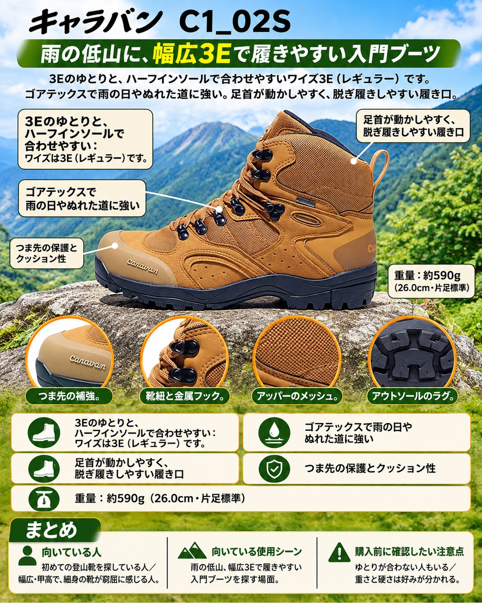

11月に入り、近郊の低山では紅葉が色づき始めました。一方で、今週は2日と5日に広く雨が降り、週末は冬型の気圧配置で冷え込む見込みです。雨のあとの登山道は、ぬれた落ち葉や泥で足元が悪くなりがちです。週末の山行を前に、靴を見直しておきたいタイミングです。
導入
11月に入り、近郊の低山では紅葉が色づき始めました。一方で、今週は2日と5日に広く雨が降り、週末は冬型の気圧配置で冷え込む見込みです。雨のあとの登山道は、ぬれた落ち葉や泥で足元が悪くなりがちです。週末の山行を前に、靴を見直しておきたいタイミングです。
今回紹介するのは、キャラバンの「C1_02S」（商品番号 0010106）です。ゴアテックスのメンブレンを内蔵した防水透湿のトレッキングシューズで、初めて登山靴を履く人にも向く履きやすさを重視したモデルです。2014年に登場した3代目のモデルで、長く売れ続けている定番です。
YAMA FITでは10月にキャラバンの「グランドキング」シリーズを2足紹介しました。いずれも岩場や縦走を視野に入れた本格派でした。今回は、これから登山を始める人の「はじめの1足」として、足に合わせやすい点を中心に見ていきます。
基本スペック
※仕様と価格は2026年11月4日時点のキャラバン公式オンラインストアの表示です。
| 項目 | 内容 |
|---|---|
| 商品名 | C1_02S |
| 商品番号 | 0010106 |
| 価格 | ¥20,900（税込） |
| 重量 | 約590g（26.0cm・片足標準） |
| サイズ | 22.5〜29.0cm・30.0cm（262デザートサンドは22.5〜26.0cm） |
| ワイズ | 3E（レギュラー） |
| カラー | 125アッシュ、262デザートサンド、340アンバー、670ネイビー、941ブラックシルバー |
| アッパー | メッシュポリエステル／合成皮革（トゥガード／TPU補強） |
| ライニング | ゴアテックス メンブレン |
| アウトソール | キャラバントレックソール |
| ミッドソール | EVA |
| インソール | EVAインソール |
| 付属 | ハーフインソール |
3Eのゆとりと、ハーフインソールで合わせやすい
ワイズは3E（レギュラー）です。日本人の足に合わせてゆとりを多めにとった形状で、ほかの靴で窮屈さを感じる人は試す価値があります。使った人の声でも、幅広・甲高の足に合うという意見が多く見られます。
ゆとりが大きすぎると感じる人のために、ハーフインソールが付属し、これでワイズや足長をある程度調整できます。自分の足の形がまだよくわからない初心者にとって、調整の余地があるのは安心材料です。
ゴアテックスで雨の日やぬれた道に強い
ライニングにゴアテックスのメンブレンを内蔵し、防水性と透湿性を両立しています。使った人の声でも、雨に強いという評価が複数あります。雪の残る標高約2,000mの山で、シャーベット状の雪や泥の中を歩いても靴下がぬれなかったという声もあります。雨上がりの紅葉の低山に向く作りです。
足首が動かしやすく、脱ぎ履きしやすい履き口
アキレス腱部分を浅くカットし、歩行時の足の自然な動きを妨げない設計です。履き口は柔らかい生地と厚めのクッション材で仕上げてあり、使った人の声でも、足首まわりが柔らかく脱ぎ履きしやすい点が挙げられています。
つま先の保護とクッション性
つま先はTPU（樹脂）のカップで補強し、岩や木の根に当たったときに指先を守ります。ミッドソールは硬さの違う2種類のEVAを組み合わせ、クッション性とバランス性の両立を図っています。以前の靴では痛んだ下りでも、つま先が痛くならなかったという声があります。
デメリット・注意点
- ゆとりが合わない人もいる：3Eのゆったりした形は、幅の細い足には緩く感じることがあります。普段より0.5〜1cm大きめを選んだという声も複数あり、サイズ選びは店頭で試し履きして確かめるのが確実です。
- 重さと硬さは好みが分かれる：重量は26.0cmで片足約590gです。使った人の声では「軽い」という意見がある一方、重い、街で履くには硬いという意見もあります。ローカットの軽いハイキングシューズに慣れた人は、履き比べてから選ぶとよいでしょう。
- ぬれた岩では油断しない：ぬれた岩でわずかに滑ったという声があります（滑りにくいという声もあります）。雨上がりの岩場や木道では、歩幅を小さくして慎重に歩きましょう。
- 凍結した道や積雪期の高山には向かない：凍った道はチェーンスパイクなしでは歩けなかったという声があります。今週、涸沢上部は積雪・凍結しており、3,000m級の稜線は氷点下の日が増えています。この靴の出番は、紅葉の低山や雪のない山道と考えてください。
- 蒸れの感じ方には個人差がある：通気性を評価する声と、蒸れを感じるという声の両方があります。
向いている人・向いていない人
◎向いている人
- 初めての登山靴を探している人
- 幅広・甲高で、細身の靴が窮屈に感じる人
- 雨の日や雨上がりの低山・紅葉ハイクにも出かけたい人
- 店頭で試し履きして、インソールでフィットを調整したい人
△向いていない人
- 幅の細い足で、ぴったりしたフィットを好む人
- 軽いローカットシューズで速く歩きたい人
- 岩場の続く縦走や重い荷物を背負う山行が中心の人
- 凍結や積雪のある時期の高い山に行く人
まとめ
キャラバンの「C1_02S」は、3Eのゆとりとハーフインソールによる調整のしやすさ、ゴアテックスの防水透湿性、柔らかい履き口を備えた、はじめの1足に選びやすいトレッキングシューズです。重さや硬さ、ゆとりの感じ方には個人差があるので、試し履きは欠かせません。雨の多い晩秋に、ぬれた紅葉の低山を安心して歩くための足元として検討してみてください。
この記事で紹介した商品
価格・重量・在庫は各ブランド公式サイトの記載（確認日つき）にもとづきます。商品を押すと、購入先を選べます。
この記事にはアフィリエイト広告が含まれます。リンク先での購入により、当サイトが報酬を受け取る場合があります。山行の前には、最新の気象とルートの状況を必ずご確認ください。